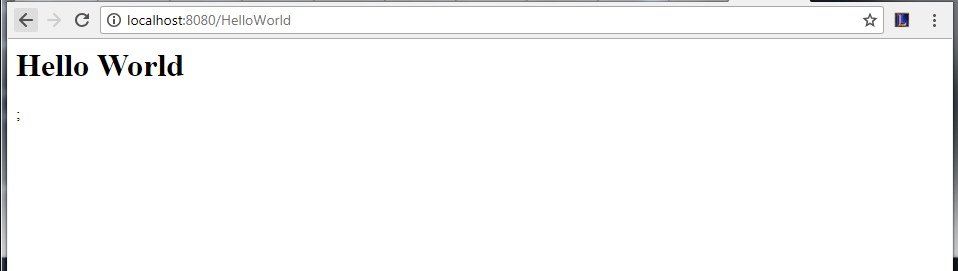

Sample programs are what give the user, the most basic template for creating the actual program. Servlets contain the code, compilation of the code, and the deployment of a servlet.
"Hello World!" program
There are plenty of basic codes which show exactly how to create a servlet. But what could beat the original sample code of them all which is a "Hello World" program?
Servlets utilize the javax.servlet.Servlet interface which service HTTP requests and implements.
Sample Code:
// These are the required libraries
import java.io.*;
import javax.servlet.*;
import javax.servlet.http.*;
// Extend the HttpServlet class
public class HelloWorld extends HttpServlet {
private String message;
public void init() throws ServletException {
// Initialization codes...
message = "Hello World";
}
public void doGet(HttpServletRequest request, HttpServletResponse response) throws ServletException, IOException {
// Set the content type for the response
response.setContentType("text/html");
PrintWriter out = response.getWriter();
out.println("<h1>" + message + "</h1>");
}
public void destroy() {
// End the session.
}
}
Create a file which should be named HelloWorld.java and contains the code above. Place it in an easy-to-remember location. The location must then be added to the CLASSPATH.
When your environment is completely set-up, compile your java file with the following code
javac HelloWorld.java
//note: your servlet interface may not be found at times.
//use the following code in cmd to compile your program
//javac -cp .;C:/path/to/lib/servlet-api.jar HelloWorld.java
Deployment:
Copy the class file of your program (HelloWorld.class) into the classes of the WEB-INF directory of the tomcat server(C:/location/of/tomcat/webapps/ROOT/WEB-INF/classes).
Next, create the following entries and add them to the web.xml file found in the same directory.
<servlet>
<servlet-name>HelloWorld</servlet-name>
<servlet-class>HelloWorld</servlet-class>
</servlet>
<servlet-mapping>
<servlet-name>HelloWorld</servlet-name>
<url-pattern>/HelloWorld</url-pattern>
</servlet-mapping>
Deployment is almost finished. The final step is to run the server by typing the following code:
C:/path/to/tomcat/bin/startup.bat
Once everything is set, go to the browser and type: http://localhost:8080/HelloWorld. The result should show the following.

This basically gives the user an entire template to use.